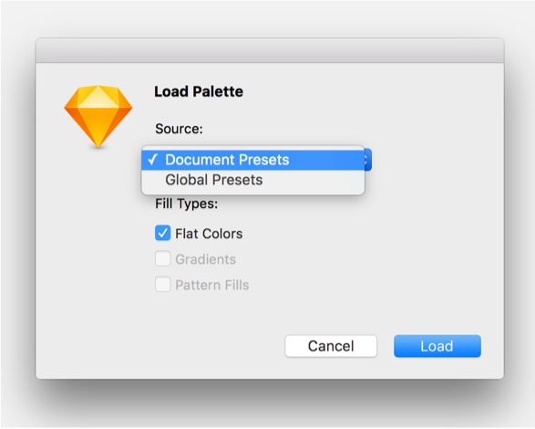

<div class="help-content"><div class="center-column"><h2>How to use a .sketchpalette file</h2><h3>1. Get the Sketch Palettes plugin</h3><p>I highly recommend <a href="https://sketchpacks.com/">https://sketchpacks.com/</a> for managing your sketch plugins. Within sketchpacks, you can search 'palettes' and the sketch-palettes plugin will appear.</p><p>Otherwise, instructions/info here: <a href="https://github.com/andrewfiorillo/sketch-palettes">https://github.com/andrewfiorillo/sketch-palettes</a></p><h3>2. Load your palette from the Plugins menu</h3></div></div>